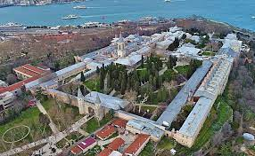
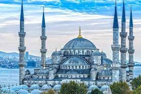

Histotto: A Historical Site Exploring The Ottoman Empire
The Ottoman Empire, colloquially known as modern Turkey, is one of the world's most infamous empires. It is known for controlling much of Southeast Europe, Northern Africa and Western Asia.
This tour will take you through The Topkapi Palace, The Blue Mosque, The Süleymaniye Mosque, The Dolmabahçe Palace, and The Grand Bazaar. There will also be pricing information listed at the end of the page.
Day 1. The Topkapi Palace

Visit the wonders and mysteries of the archaic depths of the Topkapi Palace.
From the 1460s to 1856, the palace served as the administrative center for the Ottoman Empire.
Day 2. The Blue Mosque

The fabled Blue Mosque in istanbul, also known by its official name (The Sultan Ahmed Mosque) is a historical mosque located in Istanbul, Turkey.
Hand painted blue tiles adorn the Mosque's interior walls.
Day 3. The Süleymaniye Mosque
The Süleymaniye Mosque was an imperial Ottoman mosque.
It was commisioned by Suleiman the Magnificent, giving the fabled mosque its name.
Day 4. The Dolmabahçe Palace
The Dolmabahçe (pronounced 'dol-ma-ba-chie') Palace
It served as the main administrative center of the Empire from 1856 to 1887 and from 1909 to 1922
Day 5. The Grand Bazaar
Visit the wonders of The Grand Bazaar - one of the largest and most covered markets in the world.
It is located inside the walled city of Istanbul.
Pricing

The total cost of the trip will amount to 59,600 AED (+vat) (+shippig) (+tax) (+food) (+transport) (+accommodation)